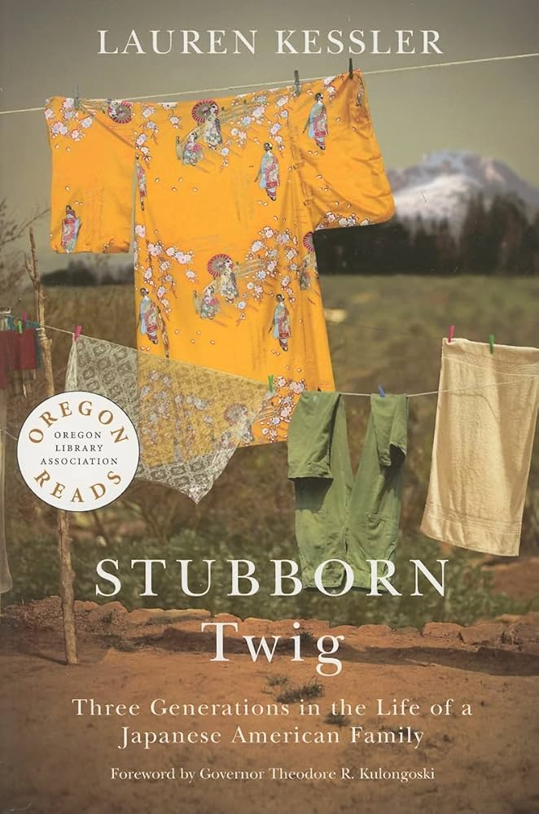

Chosen in 2009 by the Oregon Library Association as one book for all Oregonians to read, and winner of an Oregon Book Award, Lauren Kessler’s work of historical narrative non-fiction, first published in 1993, combines real-life events with a particular dramatic flair. Set primarily in Hood River, Oregon, Stubborn Twig follows the story of three generations of Japanese American immigrants, the Yasui family. The book is broken into three sections that correspond to each generation. The story of the Yasuis spans nearly a century as each generation navigates the challenges of constructing an American identity in the face of xenophobia, systemic discrimination, and forced displacement.
Stubborn Twig focuses on the specific historical context for Asian American immigrants living in Oregon and across the West Coast. What I find most compelling about Kessler’s focus on the Yasuis is how much their historical Oregon migration story differs from more commonly explored perspectives. Oregon is not solely a land of opportunity for immigrants like the Yasuis, but a place they reside in on a heavily conditional basis. They are able to inhabit and partake in the cultivation of the American West, but their connection to the country remains under constant scrutiny and control. Oregon’s implementation of alien land laws, as well as the forced displacement and internment of Japanese Americans during World War II, call into question the nature of belonging and connection.
The first section, Issei, follows Masuo Yasui’s initial journey to Oregon in 1903 and how his growing agricultural business is impeded by discriminatory policies. Kessler opens with detailed descriptions of Hood River as a place of growing potential and fertile landscapes for orchards and farms, and Masuo’s success as an apple grower represents him as an influential member of the community at Hood River, but despite his efforts to integrate, he is never fully accepted by his community or the state. Yasui personally encounters resistance from the residents of Hood River and their wariness of perceived outsiders, despite his apple orchards greatly contributing to the local economy. He, along with many other Asian American families, also contended with the series of alien land laws that prevented him and other Asian immigrants from owning land across the western U.S. The social and systemic discrimination Yasui faced at the start of the 20th century provides important and specific examples of the ways the US sought to profit off of the labor of Asian American immigrants, without any intention of acknowledging their contributions or inclusion.
The systems of exclusion that Masuo faces take on new forms in the following section, Nisei. Masuo’s eight children, second-generation American citizens, see Oregon not as a new place for opportunity but rather as their home. Though they are legally recognized as American citizens, they aren’t able to totally escape their perceived otherness by the broader community. Masuo’s son, Kay, in particular, struggles greatly from the ostracization of his Japanese heritage, in a poem he writes, “By what rights then, / American, / Are you American? / Because you were born in this land / Are you American? / I, too, claim this land as my birthplace. / As much American as you, / I, too, / Am American” (122). Though Masuo’s children face fewer legal and economic barriers, their sense of belonging in Oregon is still heavily influenced by perception.
These tensions are most emphasized in the latter part of Nisei, in the wake of Pearl Harbor and the signing of Executive Order 9066. Kessler brings the question of belonging to the forefront in this section of the book where Masuo, along with thousands of Japanese Americans are placed under heavy restrictions and eventually removed from their homes. Masuo, being a prominent Japanese American figure in Hood River, is arrested by the FBI under suspicion of being a Japanese spy and is separated from his family while his wife and children are taken to the Tule Lake internment camp at the border between Oregon and California. Despite Masuo’s contributions to Hood River, his loyalty to America is scrutinized and the fight for legal protections that he and subsequent generations built were revoked in an instant.
The final section, Sansei, follows Masuo’s grandchildren as they reconcile with the legacy of Japanese internment and the historical connections to the land their family resided in prior to their displacement. Rather than seek the approval and belonging that previous generations of Masuo’s family sought after, this generation seeks to preserve the history of their family’s presence in Hood River and reclaim the sense of belonging that was denied to earlier generations of Japanese Americans. Masuo’s descendants continue farming in Willow Flat, Oregon, and look at the landscape by how it has been shaped by their family’s history and how their achievements have enabled them to reclaim a sense of dignity in spite of generational oppression.
Lauren Kessler is an author who specializes in narrative nonfiction and has written eleven books covering various historical events and social issues. She was a professor at the University of Oregon’s School of Journalism and director of the graduate program for narrative nonfiction. Her journalism and essays have appeared in The New York Times, The Los Angeles Times, and The Oregon Quarterly. She is the founder and editor of Etude, an online journal for narrative nonfiction. She was the winner of the Oregon Book Award for Stubborn Twig, and the Pacific Northwest Book Award for Dancing with Rose: Finding Life in the Land of Alzheimer’s.
Lauren Kessler, Free: Two Years, Six Lives and the Long Journey Home (2022)
- Narrative nonfiction about formerly incarcerated Americans, and winner of the 2023 Oregon Book Award for narrative nonfiction
